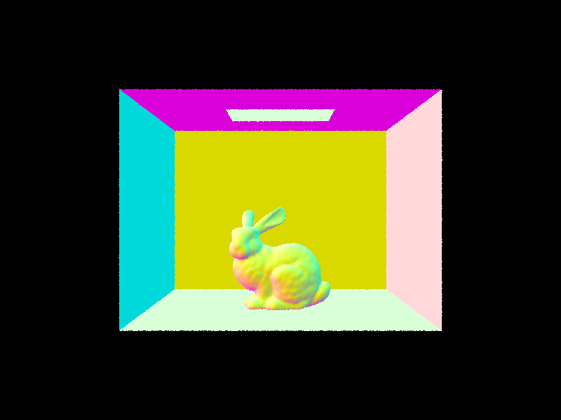

CS184/284A Spring 2025 Homework 3 Write-Up
Link to Sanika Webpage: https://cal-cs184-student.github.io/hw-webpages-pookie/hw3/index.html
Link to Dhanin Webpage: https://cal-cs184-student.github.io/hw-webpages-cs184website/hw3/index.html
Link to GitHub repository: https://github.com/cal-cs184-student/sp25-hw3-dhanika

Overview
In our project, we walk through the steps of ray tracing and explore important optimizations. As a whole, we have gone from simple ray tracing to implementing full global illumination with reasonable rendering times, providing us with many valuable insights. In addition to exploring BVHs, direct lighting sampling, and adaptive sampling, we explored various other methods for optimization including stack implementations, surface area heuristics, and non-axis-aligned bounding boxes. These all were an interesting learning process which provided us with a new perspective into optimization strategies and using data structures which suit our problem. Learning about global illumination was really cool, and seeing how each bounce of light contributed to the entire picture was a really valuable experience.
Statement on ChatGPT:
For our naive BVH construction, we used chat gpt to help us debug our code. For example, we learnt of C++ functions such as std::nth_element and std::partition. For the SAH and stack implementations, we prompted chat GPT to give us an implementation. This was buggy but allowed us to get a basic overview of how the formulas from the textbook (pbr book), could be implemented in code. We then modified and debugged this code further to fit the structures defined for this project like BVHNode. We learnt a lot about prefix sums, and I had to go look up what it was online because ChatGPT did not explain it well. Ultimately it was essential towards building up our SAH and stack implementations.
From the covariance matrix, eigenvalues were determined. Instead of library eigenvalue solvers, code generation tools created a solver using power iteration and deflation, resulting in an eigenvalue matrix. Using code generation, instead of a pre-existing library, avoided dependencies and maintained consistency with our custom Matrix3x3 and Vector3D implementation. We found code generation tools effective for producing functional code for common functions, replacing the need for libraries in some cases. However, because code generation tools are error prone, this can lead to hidden bugs.
Co-pilot is also enabled and helps us code faster. We rarely used it however, as we didn’t find it very accurate most of the time. Co-pilot helped debugging, as we could prompt it on errors. For example, we learnt that objects declared as “const” could not be overwritten by the same object type if it was not also a “const”
Part 1: Ray Generation and Scene Intersection
How do we do ray generation and primitive intersection?In our project, we are given a normalized x and y position in image space, and we convert it into a ray vector in camera space. We define the vector end using the following definition. x = tan(0.5 * hFov * PI / 180)*2*(x - 0.5), y = tan(0.5 * hFov * PI / 180)*2*(y - 0.5) and z = -1.
Then, we transform the vector end and origin (camera position) into world space using c2w. This provides us with the ray we raytrace.
Our next step is to sample the positions into the buffer. For any given x and y coordinates, we add a sampling offset that is from 0 to 1, then normalize it. We generate the ray, and take the average of n samples of the estimated global illuminance.
In the rendering pipeline, we generate rays for estimating the integral of radiance over a pixel in PathTracer::raytrace_pixel(...). For each generated ray, in the pipeline we will use the intersection functions to check whether the ray has intersected a primitive, and estimate the radiance if it does by adding the BSDF’s emission and eventually, global illumination. We then assign the pixel color to the average color across the rays generated from sample points.
How did we implement our triangle intersection algorithm?For the triangle intersection algorithm, we apply the Möller–Trumbore intersection algorithm. We set the ray equation to equal the weighted average of the triangle’s vertices based on barycentric coordinates. This provides us with the equation o + d*t = αv1 + βv2 + (1-α-β)v3.
If there is a solution for α, β, and t, then there is a valid intersection. We solve the linear equations, then check that the answers are valid for our constraints of t > 0, α and β, and (1-α-β) are greater than 0 and less than 1.
For the sphere intersection component, we solve the following equation in the helper function test:
∥p−o∥2=r2. Since a sphere is a symmetrical object, we will often have two intersection points. For this, we solve for the quadratic equation:
a*t2+b*t+c=0
a=dot(r.d,r.d)
b=2⋅dot(r.o−o,r.d)
c=dot(r.o−o,r.o−o)−r2
Checking for real solutions by solving the determinant: b2−4ac
Then, we solve for the roots of the quadratic equation, returning true if the two intersection points are in the valid range of t values for the ray, and setting the values of t1 and t2.
Finally, in bool Sphere::intersect, we set the ray maximum t to the entry point (min of spheres two intersection time points). We store the intersection distance to this value as well, and compute and store the surface normal in the isect object. We also store a reference for the primitive and assign the BSDF.
Similarly in bool Triangle::intersect, we set the intersection max t to the intersection time t, intersection distance, surface normal, reference BSDF and surface normal. We also set the ray maximum t.
|
|

|
|
|
|
Part 2: Bounding Volume Hierarchy
How did we construct our BVH?First, we iterate through all provided primitives, calculating a bounding box that contains all primitives and we store a list of centroids. We create a new BVHNode with the bounding box calculated above.
If the number of primitives is less than or equal to max_leaf_size, this is a leaf. We set the current BVHnode to equal start=start and end=end, with l and r pointing to null, and then return the BVHnode.
Otherwise, we determine the longest axis and iterate through all centroids to calculate the average centroid position along that axis. Our heuristic is the average centroid position.
We use the partition function to split our list of primitives into two lists in place. Elements smaller than the average centroid position go into the right node and elements larger than the average centroid position go into the left node.
We create two BVH using construct_bvh, in which we set the left and right pointers of the current node to the new left and right nodes.
For the left node, start equals the initial start iterator, the end is equal to the midpoint iterator provided by the partition. For the right node, start is the midpoint iterator and the end is equal to a pointer to the original end iterator.
We return the BVHnode constructed at the start.
|
|

|
|
|
|
unoptimized CBcoil.dae(4.7301s) CBDragon.dae(114.4405s)
optimized CBcoil.dae(0.0586s) CBDragon.dae(0.0567s)
|
|
Our results show that the BVH substantially improves performance. With a moderately high triangle count, as seen in CBcoil.dae, there is a 83x speedup. For larger polygon counts, the speedup is even higher, with a 2000x speedup in CBDragon.dae, which has significantly more polygons. Another key insight is that the optimized rendering time for CBcoil.dae and CBDragon.dae are similar, both being around 0.05s. This indicates that the BVH turns the runtime from O(n^2) to Olog(n) approaches a constant for practical purposes of 0.05 for any sized file. This means that the number of rays dominates the performance, rather than the number of primitives in the scene.
Part 3: Direct Illumination
Direct lighting with Uniform Hemisphere SamplingWe implemented uniform hemisphere sampling by first creating a variable to store the total radiance. Then, we iterate over the num_samples, determined from the number of lights and the ns_area_light constant.
In our loop, we sample a vector from the uniform hemisphere sampler. We transform that vector into world space, then create a new ray starting from the hit position of the intersection, in the direction of the sampled vector.
Using that new ray, we test if it intersects the BVH. If it does, we calculate the incoming radiance using the zero_bounce_radiance function, which returns the emission value of an intersected surface. We apply the BRDF, multiplying the incoming radiance by the BSDF at the isect point and the cos_theta in object space of the outgoing ray.
We add this sum to the total radiance and repeat the process num_samples times.
We return 2π times the total radiance divided by the number of samples to get the radiance at this particular camera ray.
Direct lighting with Importance Sampling LightsWe implemented importance sampling by first creating a variable to store the total radiance. Then, we iterate over all of the lights in the scene.
We check if it is a point light. If it is, we sample from the light once. If the dot product of the sampled direction and the isect normal is less than 0, we return because it is behind the surface and will not contribute any light. Otherwise, we cast a shadow ray with the sampled direction and a max_t equal to the distance to the light minus a small floating-point constant. If the shadow ray does not intersect anything, we apply the BRDF, multiplying the sampled radiance by cos_theta and the BSDF at the point of the initial intersection.
If it is not a point light, we create a loop that iterates ns_area_light times. Inside the loop, we sample the light. We do the dot product test again to check if the light is behind the surface. Then, we cast a shadow ray again in the direction of the sample to see if it hits anything before reaching the light. If it doesn't, we apply the BRDF, multiplying the sampled radiance by cos_theta and the BSDF at the point of the initial intersection. However, we also divide by the PDF, which is provided by the sampler function. We add the light radiance, divided by ns_area_light, to L_out, and return L_out once we finish iterating through all the lights.
|
|
|
|
|
|
Uniform Hemisphere sampling vs Lighting sampling
Comparing results between uniform hemisphere sampling and light sampling, we see that uniform hemisphere sampling is much noisier. In CBbunny.dae, areas close to the top of the ceiling are extremely noisy with uniform hemisphere sampling. Light sampling does not have noise in the same area. Although most noticeable at the top of the walls, we also see significant noise on all sides of the CB box with uniform hemisphere sampling. The further away a surface is, and the more angled a surface is relative to the light, the more noise results. Something which is not as affected by the noise is the shadows. We do not see significantly more noise in the shadows, comparing other areas in uniform sampling versus light sampling.
Comparing the noise levels in soft shadows

|
|
|
|
|
As our sampling rate increases, the noise levels in the soft shadow area decrease significantly. With a low sampling rate, large dark areas are created in the shadows that do not accurately represent the size or brightness of the real shadow. This is due to the high noise level in the shadows without a high sampling rate.
Part 4: Global Illumination
Walk through your implementation of the indirect lighting functionIn Vector3D PathTracer::at_least_one_bounce_radiance, we compute the exact point of where the ray hits the surface in hit_p, and convert the outgoing ray direction to world space. We then call isect.bsdf->sample_f(), which samples a new random direction for the bounced ray, and computes the probability density function (pdf) for the sampled direction. We store the BSDF value for this direction in test_ray_in. We then set our Russian Roulette termination condition: with a fixed survival probability (heads), terminate paths randomly if a coin flip results in tails. We also always allow bounces at the first ray hit (r.depth == max_ray_depth), even if the coin flip results in tails. We then set the base case: if we are at the last bounce, return direct illumination.
In the recursive case: We convert the bounce direction to world, then compute the bounce ray from this direction and offset it by ESP_D to prevent self-intersection. This bounced ray will have depth r.depth - 1 for recursion. We then check for an object intersection. If there is no intersection, there is nothing for the ray to bounce off ) of (since indirect illumination is not possible in empty space and we terminate recursion, returning direct illumination.
If the ray does intersect, we make a recursive call to compute radiance from the next bounce. We compute the final radiance of the bounce by multiplying by the BSDF, apply cosine weighting for Lambertian shading, and finally normalize by the pdf for the sampled direction and fixed survival probability from russian roulette to unbias our Monte Carlo estimation. Finally, if isAccumBounces is true, we accumulate both direct and indirect illumination, and if it's false, only indirect lighting is stored. We return the computed radiance when the recursion is finished.
Global Illumination
|
|
|
Only Direct Illumination vs Only Indirect Illumination
|
|
|
Here, we see how indirect lighting provides important illumination in the shadows and helps to introduce color bleed from the walls. We see that indirect illumination is less intense than direct illumination but provides a noticeable effect in the shadows of the direct illumination. The most obvious difference is on the ceiling, which would not be illuminated without indirect illumination.
| isAccumBounces Comparison | |
|---|---|
| isAccumBounces=false | isAccumBounces=true |
|
|

|
|
|
|
|
|
|
|
|
|
|
|
|
|
|
|
2nd and 3rd bounce of light, and how it contributes to the quality of the rendered image compared to rasterization
The 2nd bounce of light has the most significant impact on indirect illumination with the bunny. One area significantly affected is the roof of the box, going from completely dark to illuminated because of indirect lighting from the second bounce. The second bounce also indirectly illuminates the bunny from the walls, resulting in red and blue on the bunny. It also results in softer shadows, contributing to the illumination of the bottom shadow of the bunny. The 3rd bounce of light is less impactful but contributes further to the effects of the second bounce. The 3rd bounce also significantly illuminates the bunny on top. Compared to rasterization and the Blinn-Phong model, the first bounce is similar to specular and direct illumination, the second bounce is similar to ambient lighting, and the third bounce contributes to ambient lighting. However, instead of a simple constant, ray-traced bounces reflect actual light, allowing for soft shadows, light bleed from the walls, and physically accurate ambient lighting. The overall quality of the picture in comparison to rasterization shows the most significantly improved quality in the shadows and dark areas, allowing for accurate indirect lighting in those areas.
Compare rendered views of accumulated and unaccumulated bouncesComparing the views of the accumulated and individual bounces, we see how, without the accumulation of light, the later bounce values contribute less to the overall brightness of the image. We see the first bounce is very important, contributing the majority of the lighting in the scene, and the second bounce is important, contributing the indirect lighting. The subsequent bounces have a smaller impact on the overall image but help to provide more prominent indirect lighting.
| CBbunny Russian Roulette | ||
|---|---|---|
|
|
|
|

|

|
|
| Samples Per Pixel Comparison | ||
|---|---|---|
|
|

|
|
|
|
|
|
|
|
||
|
|
||
In this scene, we chose the CBspheres, and we see how a higher samples-per-pixel rate results in a much clearer image with less noise. We can especially notice this in the dark areas and shadows, where noise is a significant issue with lower sample-rate images.
Part 5: Adaptive Sampling
At a high level, adaptive sampling concentrates a higher number of samples per pixel to difficult parts of the image with high detail or variation, helping improve rendering efficiency while maintaining visual quality. It does this by computing variance across sample batches. We iterate through a fixed number of batches, and in each patch we generate a random sample point within the pixel, generating a ray in world space that when exiting the camera, deposits light at the sensor plane position given by the random sample point in the pixel. We then call est_radiance_global_illumination(ray) to compute radiance along the ray. We then compute illumination of the total color, and compute variance and confidence level:
I=1.96 * σ/√n
To measure the pixel's convergence. We define convergence as:
I≤maxTolerance⋅μ
We check this condition at the end of each batch and when this condition is satisfied, we terminate sampling and color in the pixel.
We do this because the pixel color has converged and we don’t need to trace more rays for this pixel, allowing us to remove unnecessary computation while generating noise free images.
We don’t check convergence for each new sample, instead we check whether a pixel has converged every samplesPerBatchPixels.
| Adaptive Sampling Results | |
|---|---|
| Scene | Sample Rate |
|
|
|
|
|
|
|
|
|
We can see in these scenes by the corresponding rate image, that the background is blue, indicating low sampling rates. This makes sense because the background is very low detail. In blob.png, we can see that the shadowing at the bottom of the blob means that part of the image is very highly detailed (mix of highlights and shadows from the groves in the blob). The rate image validates that we have a much higher sampling rate at this part of the image, by the red in corresponding part of blob.png. Similarly, in the sphere image, parts of the image, especially the background, where the light hits relatively uniformly from the middle to the bottom, the rate image is blue. However, under the spheres and at the roof of the image where our light source is, there is a much higher variation of illumination, and thus the rate image is more red in these parts.
Part 6: Extra Credit Opportunities
Non-Axis-Aligned Bounding BoxesWe extended our existing BBox implementation to support non-axis-aligned bounding boxes, maintaining compatibility with traditional axis-aligned bounding boxes.
Initializing a non-axis-aligned bounding box is a multi-stage process. Given a set of points, we construct the bounding box using Principal Component Analysis (PCA).
Initially, the centroid of the bounding box is computed in world space. This is achieved by averaging all provided points.
Next, a covariance matrix is generated. This involves iterating through the points and computing the covariance between all variable pairs. The resulting sum is then divided by the total number of points, yielding the covariance matrix.
From the covariance matrix, eigenvalues were determined. Instead of library eigenvalue solvers, code generation tools created a solver using power iteration and deflation, resulting in an eigenvalue matrix. Using code generation, instead of a pre-existing library, avoided dependencies and maintained consistency with our custom Matrix3x3 and Vector3D implementation. We found code generation tools effective for producing functional code for common functions, replacing the need for libraries in some cases. However, because code generation tools are error prone, this can lead to hidden bugs.
The bounding box's half-extents are then computed. The points are transformed into the eigenspace defined by the eigenvalues. Within this space, the minimum and maximum x, y, and z coordinates are identified. The difference between the maximum and minimum for each dimension, divided by 0.6, defines the half-extents. The factor of 0.6 (rather than 0.5) slightly enlarges the box to mitigate potential floating-point errors.
The BBox stores the eigenvalue matrix as its orientation, along with its inverse for optimized intersection computations. The center and half-extents are also stored.
The intersect function was adapted for non-axis-aligned bounding boxes. The ray's origin and direction are first transformed into the eigenspace. Subsequently, the standard slab method, similar to the original intersection test, is applied.
A hybrid Bounding Volume Hierarchy (BVH) was implemented, incorporating both AABB and our custom bounding boxes. When expanding a bounding box, we include the eight corners of the AABB to guarantee the new box encompasses the primitive. The upper BVH levels utilize only AABBs, while the lower levels can employ non-axis-aligned boxes to enhance performance.
Rendering a CBBunny scene with the settings: -t 1 -s 128 -l 1 -m 5 -r 480 360 -f bunny.png ../dae/sky/CBbunny.dae, yielded the following results:
[PathTracer] Rendering... 100%!(93.1270s) versus [PathTracer] Rendering... 100%! (90.1638s).
This demonstrates an approximate 3.18% performance improvement in this scene.
|
|
SURFACE AREA HEURISTIC IMPLEMENTATION
Note*: this was implemented & written up after the importance sampling task was finished, which is why the images will look different.
Command used to test: ./pathtracer -t 8 -s 64 -l 32 -m 6 -f bunny_64_32.png -r 480 360 ../dae/sky/CBbunny.dae
8 thread (building BVH tree):
Naive dragon.dae: 0.0608 sec
SAH dragon.dae: 0.0751 sec
Naive CBbunny.dae: 0.0105 sec
SAH CBbunny.dae: 0.0152 sec
8 thread (rendering):
Naive dragon.dae: 964.4961s
SAH dragon.dae: 46.8621s
Naive CBbunny.dae: 849.0095s
SAH CBbunny.dae: 42.3556s
In this implementation, we first attempted to use the SAH heuristic for every primitive/possible split point. We soon realized that this did not improve runtime, so we implemented binned SAH.
This is a high level overview of the binned SAH implementation:
Instead of checking every primitive as a split candidate, we:
- Divide the bounding box into 16 bins
- Sort primitives into these bins by their center.
- Find the best bin with the lowest SAH cost.
- Compute the split point from the best bin.
The bin structure holds the count of primitives in the bin, and the bounding box with all the primatvies in it.
We begin by computing the bounding box of the root node and returning leaf nodes like in the naive implementation. We calculate the best axis for division (the longest axis), and hard code a constant number of bins (we set this to 16). These will be the bins we use to finally compute a split point. Then, we compute the min and maximum coordinates of our primitive space based on their centroids. For cases where all primitives have the same centroid, we simply force a split down the middle of the axis and part half the primitives in the left node and half in the right.
Our bin size is now the space taken up by the primitives (max_coord - min_coord)/ num_bins.
We place the primitives in the bins corresponding to their centroid position.
Now, we implement the SAH heuristic. We compute the left-to-right prefix sum, which is the cumulative bounding box surface area from the leftmost bin to the right most. We compute the right-to-left prefix sum, which is the cumulative bounding box surface area from right to left. We also keep track of the counts of the primitives used to create the cumulative bounding boxes.
Now, we implement the SAH heuristic to find the best split point. We define is at follows:
float sah_cost = traversal_cost +
(left_area[i] / total_area) * left_count[i] +
(right_area[i] / total_area) * right_count[i];
The travel cost is the cost of checking a ray against a BVH node. We initialize the travel cost to 1 because since it is a constant, it won’t affect the calculation for the best sah_cost significantly (think of this as traversal_cost + maxbin ( (left_area[bin] / total_area) * left_count[bin] + (right_area[bin] / total_area) * right_count[bin]))
We find the bin that results in the lowest SAH cost. If no bin exists, we again force a split. Otherwise, we compute the best point to split at as:
split_coord = min_coord + bin_size * (best_bin + 1);
This is the pointer for the index of where in the primitive list to end for the right node, and the start for the left BVH node. From here, the implementation is the same as the naive BVH implementation.
We noticed a 95% speedup in rendering time! Change in construction time was negligible.
STACK IMPLEMENTATION BVH
Command used for testing:
./pathtracer -t 1 -s 64 -l 32 -m 6 -H -f CBbunny_H_64_32.png -r 480 360 ../dae/sky/CBbunny.dae
Our stack implementation of construct_bvh works as follows:
We begin with defining a new structure to help with managing the stack. We need to keep track of the node's parents and left/right node structure, because it will get lost if we push the node to the stack naively. We define a structure, BVHStackNode, to do exactly this. It maintains a pointer to the parent node, and a boolean indicator whether it was the parent’s left or right node.
Now we begin the stack implementation. We initialize a stack and push the root node onto it, initializing its parent as a null pointer. Notably, we keep the implementation of the heuristic for splitting a bounding box and creating a left and right node the same. Then, we push the new left and right nodes onto the stack and continue processing in a while loop, popping the stack node from the top of the stack. We end iteration when the stack is empty. Intuitly, it makes sense we see a speedup, but not significantly as the main mechanisms for constructing new left and right nodes are the same.
The stack implementation of intersect is also similar. We push the root node onto the stack, and in a while loop, pop the top node of the stack. We keep most of the naive implementation of calculating intersection with the node the same, but instead of a recursive call to its left and right nodes, we push the left and right nodes onto the stack and continue processing.
We only noticed a speed up when using 1 thread. When using 8 threads, the speed up is not noticeable, likely because the difference between a recursion call and a stack call is mitigated by threads finishing faster than other threads.
Constructing BVH speedup: 13% speedup
Rendering BVH speedup: ~ -20%
While constructing the BVH with a stack implementation is faster, rendering with a stack implementation (traversing the BVH tree) is noticeably slower.
Output images for verifying stack implementation:
|
|
|
Memory efficient BVH by storing all the Primitive pointers in one large vector
To improve the memory efficiency in our Bounding Volume Hierarchy (BVH), we avoid creating new vectors of primitives at each node. Instead, our BVH construction is performed in-place on the original primitive vector. We recursively use the partition function to divide the vector into two sections representing the primitives belonging to the left and right child nodes. From this partitioning function, we can retrieve the iterators for the respective parts. The space complexity is O(n), where n is the number of primitives, as opposed to O(n log n) for our naive approach. All photos in the project were generated using this method.